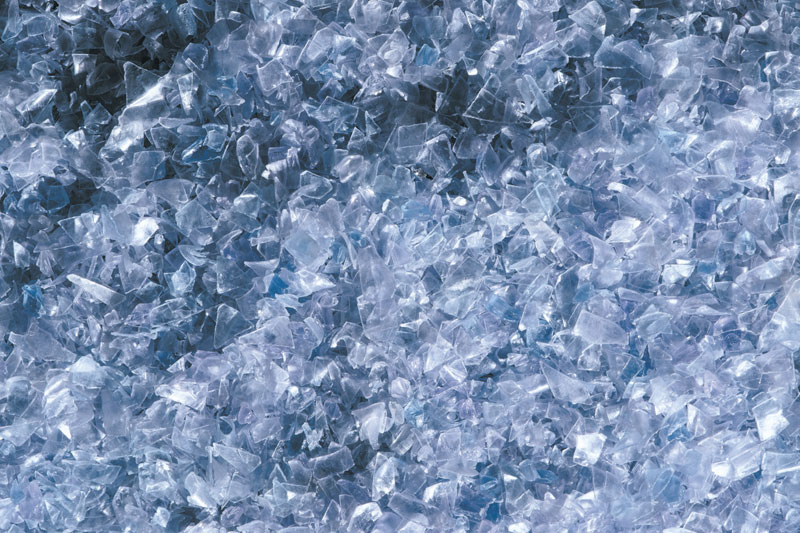
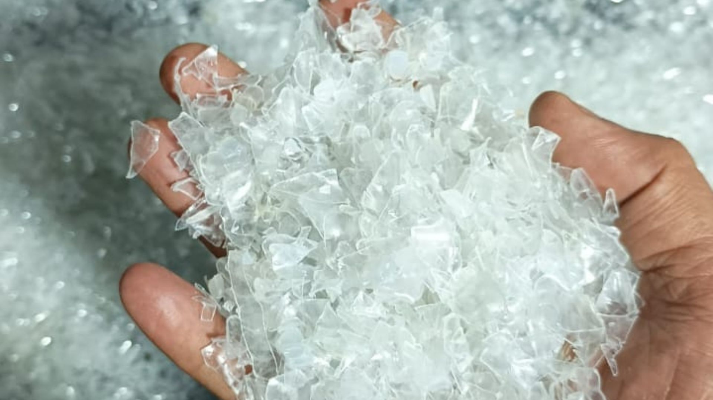
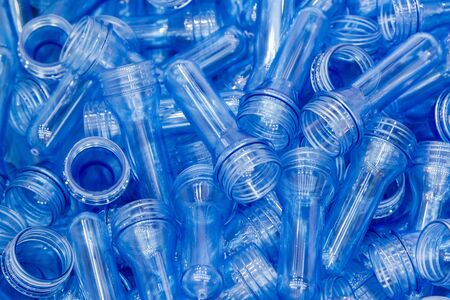
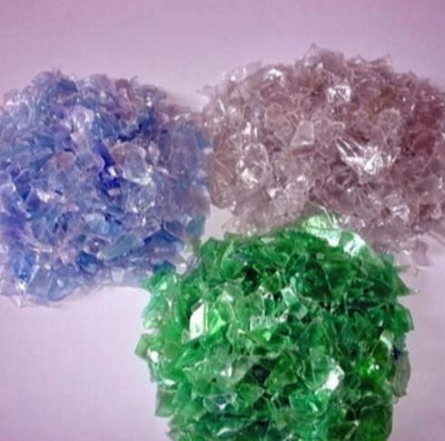

Produits en PET recyclé de haute qualité pour la fabrication industrielle et les applications d’emballage durable.

Nos flocons de PET recyclé sont produits grâce à un processus de recyclage avancé et respectueux de l’environnement. Issus de bouteilles en PET post-consommation et post-industrielles, les matériaux sont soigneusement triés, lavés et transformés afin d’atteindre un haut niveau de pureté. Polyvalents et durables, ces flocons sont utilisés dans les films de qualité alimentaire, les barquettes, les fibres textiles, les emballages et de nombreuses autres applications industrielles.

Notre broyat de préforme PET transparent offre une solution fiable et polyvalente pour de nombreuses applications industrielles. Issu de préformes PET recyclées, il se distingue par une excellente transparence, une qualité constante et de bonnes performances pour les emballages, les produits moulés par injection et d’autres usages industriels.

Le broyat de préforme PET bleu clair de Freedom Recycling est obtenu à partir de préformes PET recyclées de haute qualité. Ce matériau est idéal pour les applications nécessitant une couleur spécifique tout en offrant les avantages environnementaux du recyclage. Il garantit une qualité constante et des performances fiables pour divers procédés de fabrication industrielle.

Nos flocons de PET colorés sont soigneusement triés et transformés afin de fournir une matière recyclée fiable pour l’industrie. Ils conviennent à de nombreuses applications de fabrication où la constance des couleurs et l’intégration de matières recyclées sont importantes.
Nos produits respectent les normes industrielles en matière de contenu recyclé et de performance.
Nous fournissons des certificats et documents pour chaque expédition afin de soutenir vos rapports de durabilité.
Partagez vos besoins et nous vous proposerons la solution adaptée
DEMANDER UN DEVIS